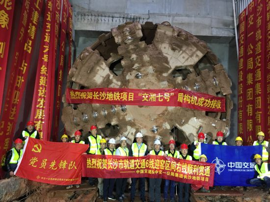

国庆长假期间，长沙地铁6号线全线未停工，沿线都处于热火朝天施工中。6日清晨，“轰隆”一声巨响，打破了早上的宁静，“交湘七号”盾构机从窑岭湘雅二医院站破壁而出，长沙地铁6号线迎宾路口站—窑岭湘雅二医院站区间（简称“迎窑区间”）右线盾构接收现场响起热烈的掌声。迎窑区间贯通是全体项目人员艰苦奋斗的结果，也是他们以自己的方式给国庆的献礼。
长沙地铁6号线迎窑区间右线顺利贯通。记者 陈焕明 通讯员 赵斌 陈林成 雷涛 摄影报道
迎窑区间左线长1268米，右线长1288米，沿线下穿已运营的轨道交通2号线隧道、省政府机关二院等建构筑物116处，燃气、通信等各类管线79条。施工方中交一公局项目现场负责人介绍，为了确保盾构顺利高效掘进，项目部前后召开5次专家评审会，掘进过程中全方位跟踪监测盾构机及地表情况，每日开展安全巡查，及时调整掘进参数，稳定跟进注浆工作，在穿越风险源时沉降数据控制在毫米级，以确保施工安全高质高效稳步推进。
记者了解到，这已经是长沙地铁6号线中心城区段第6台盾构机破土而出了。“交湘七号”盾构机吊出后，将转场至湘雅医院站，进行文昌阁站—湘雅医院站盾构区间的掘进。截至目前，中心城区段7站6区间已完成5座车站主体结构封顶，6条盾构区间单线贯通，2座车站正在进行主体结构施工，2台盾构机正在掘进。

长沙地铁6号线烈迎区间暗挖单渡线双线日前顺利贯通。记者 陈焕明 通讯员 赵斌 陈林成 雷涛 摄影报道
长沙地铁6号线作为长沙市轨道线网东西向的骨干线路，是长沙地铁线路中最长、跨度最大、换乘最多、涵盖区域最广的一条，也是途经省市重点医院最多的线路。6号线西起谢家桥站，东至黄花机场西站，线路全长48.11公里，共设34座车站，建成通车后将快速衔接河西副中心、城市主中心、星马片区南部、空港组团和黄花机场。
 关注湖南文化产业网微信公众号
关注湖南文化产业网微信公众号湖南文化产业网(www.hnci.net.cn)版权所有 (c) All Rights Reserved.
未经湖南文化产业网书面特别授权，请勿转载或建立镜像